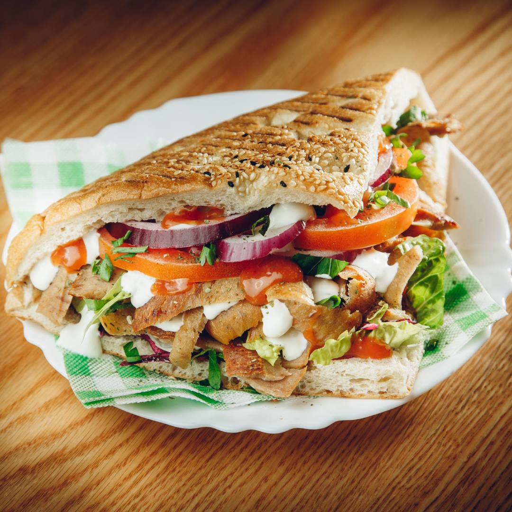
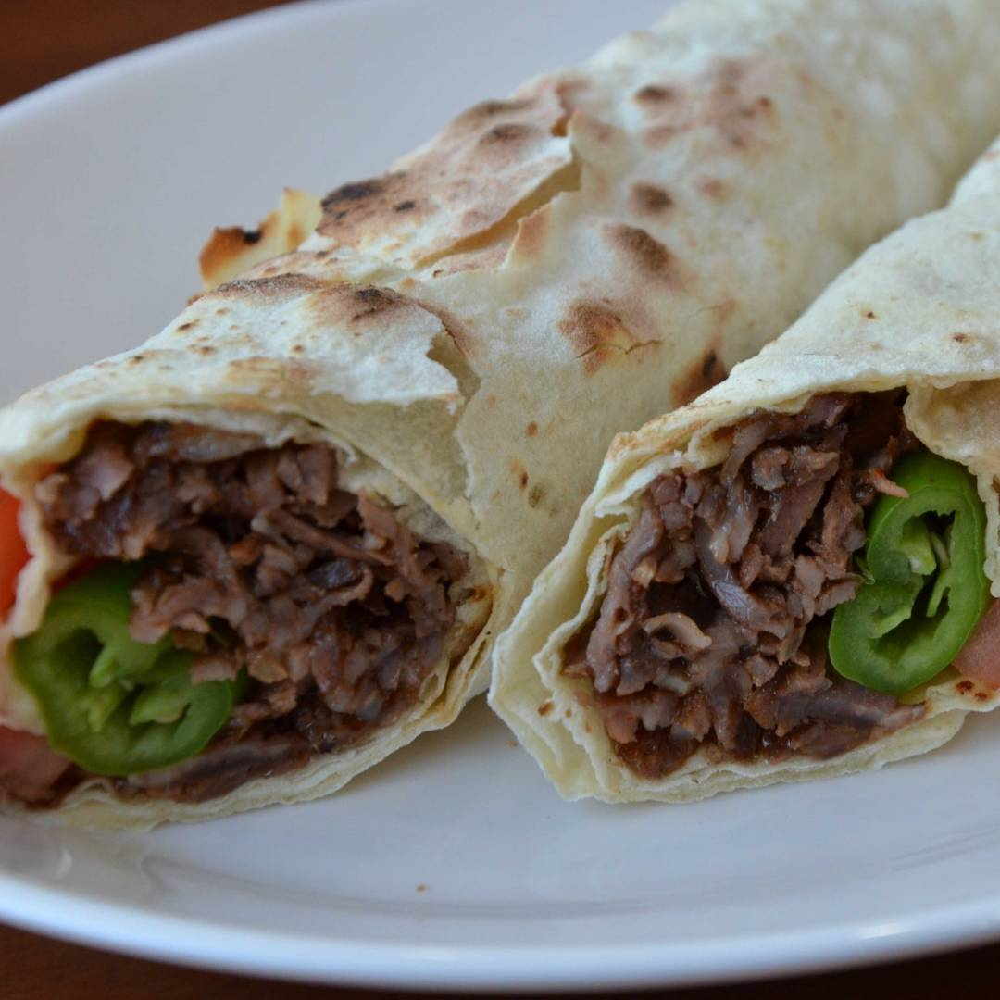
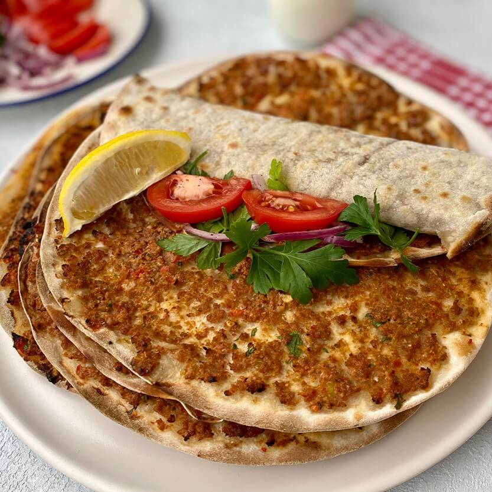
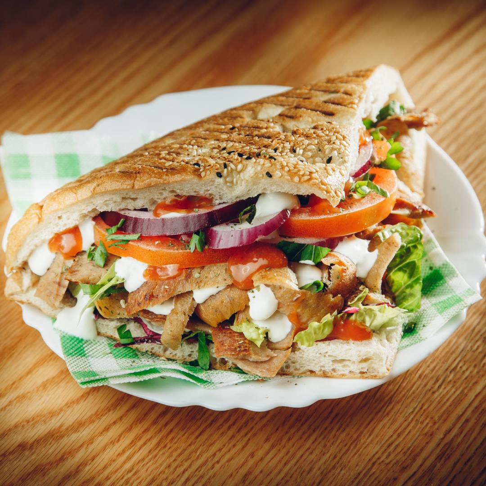
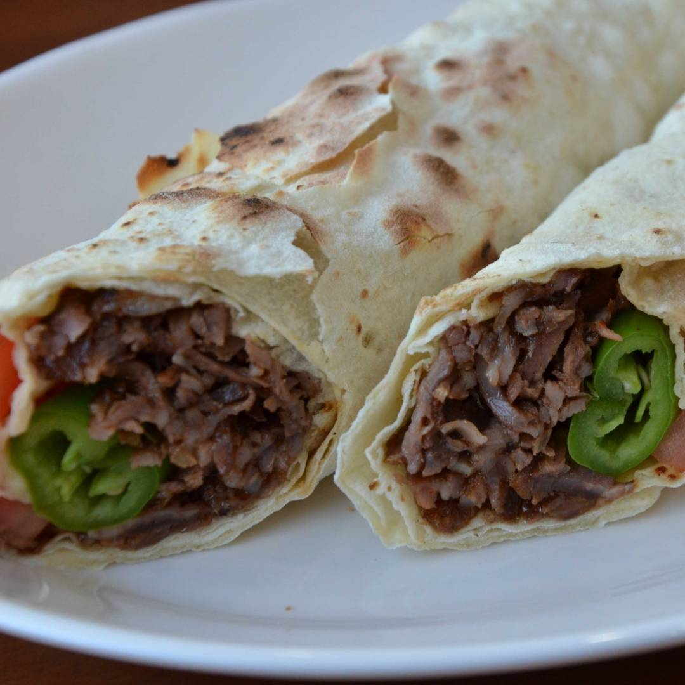
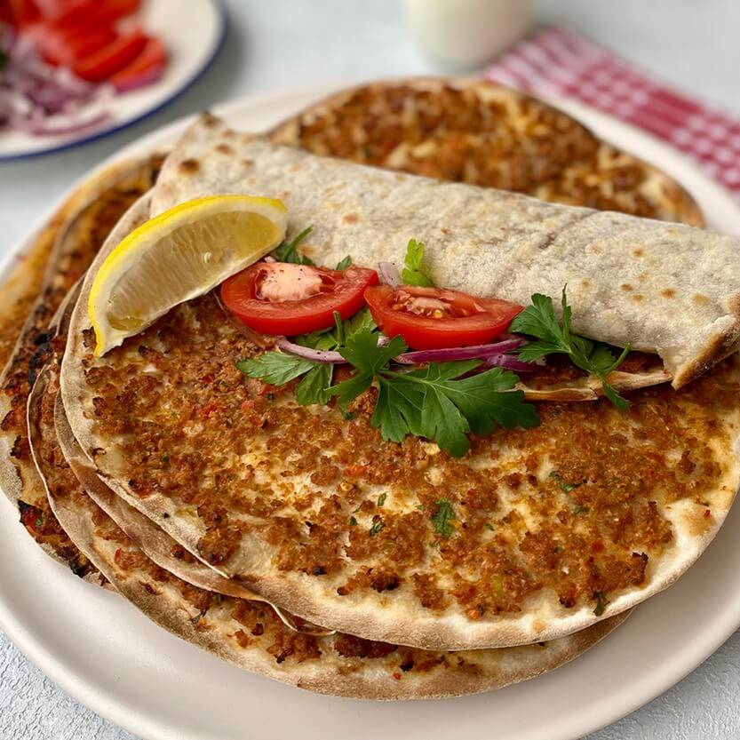

Kommen Sie vorbei und genießen Sie unsere frisch zubereiteten Gerichte.
Speisekarte
| Gerichte: | Döner  | Dürüm (Yufka)  | Lachmachun  | Pommes | Dönerbox | Getränke |
|---|
Kommen Sie vorbei und genießen Sie unsere frisch zubereiteten Gerichte.
| Gerichte: | Döner  | Dürüm (Yufka)  | Lachmachun  | Pommes | Dönerbox | Getränke |
|---|